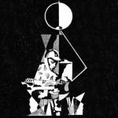

Music Reviews
-

King Krule 6 Feet Beneath the Moon
He may have initially crushed us at the age of 16 with his emotional wrecking ball Out Getting Ribs, but does King Krule's debut full-length make nearly as strong and impression as the project's early singles did?
Peter Quinton tackles the dense, foggy web that is King Krule's debut album... -
Default Genders Stop Pretending EP
James Brooks releases his first real solo offering since the demise of the Elite Gymnastics project with Josh Clancy. Does the song remain the same, or has the removal of the duo's dynamic changed things for the worse?
Does the magic remain, or has it been RUINed? -

Medicine To The Happy Few
18 years after breaking up, the alt-rockers return with a new album of noisy shoegaze.
David John Wood asks whether it was worth it... -
Forest Swords Engravings
How does a producer of moody R&B which you can't really dance to make his mark in today's crowded marketplace? Borrowing a load of martial arts movie score tropes should do it.
Mark Davison took judo classes when he was 8 years old... -

Pop. 1280 Imps of Perversion
Pop. 1280's latest album is certainly aggressive, that's for damn sure. But does that necessarily make it a compelling listen?
Peter Quinton reviews Pop. 1280's latest album -

Pure Bathing Culture Moon Tides
The Portland, Oregon duo of Sarah Versprille and Daniel Hindman create dreamy beach pop. Are you ready for the waves?
Michael Iovino reviews... -

Travis Where You Stand
The long-standing Glasgow balladists are back after a five-year break, coming back into the pop arena by writing a soundly crafted set of songs that suits their age and character.
Juan Edgardo Rodríguez reviews... -
Crocodiles Crimes of Passion
The San Diego band's fourth full-length effort has all the sensibilities of classic garage rock, longing for the golden age of rock n' roll.
Carlos Villarreal reviews... -
Washed Out Paracosm
The second full-length album from Washed Out is an opus to everyone’s personal fantasyland. Paracosm is this year’s most soothing accessory to nostalgia.
Randi Dietiker reviews... -

Swim Deep Where The Heaven Are We
Swim Deep are a quartet of seemingly nice guys who explore their adolescent oscillations by the means of a shamelessly poppy debut, maintaining the lackadaisical, languid and dreamy B-Town motif.
Carl Purvis reviews...